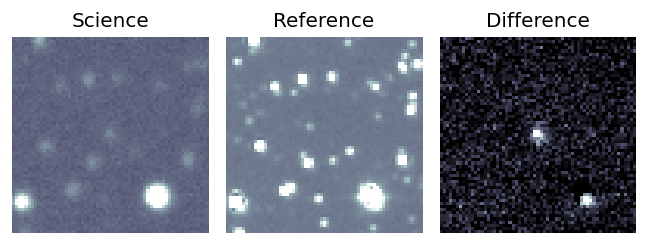
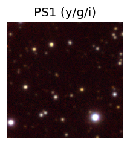
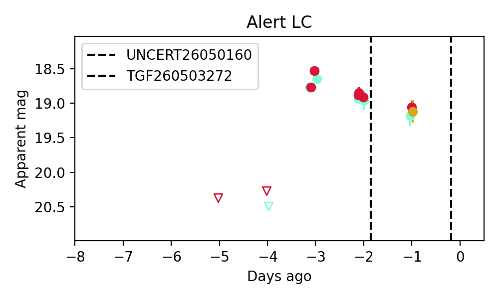
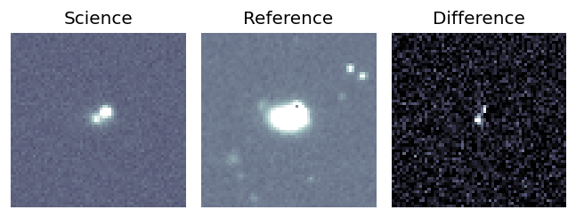
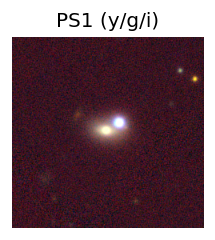
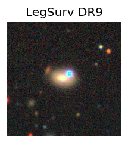
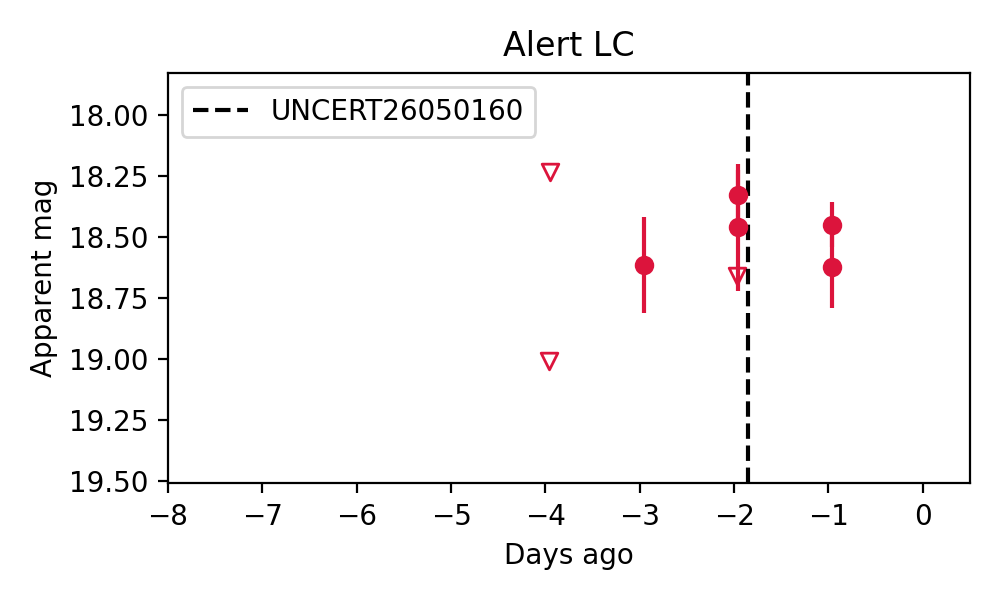

Candidate List 20260503 Previous Day Next Day Section 1: New Sources (age<1d) Cosmological Afterglow
Section 2: Old (1-5d) sources observed last night placeholder
Section 1: New Afterglow/FBOT Cands Last Night (0)
Section 2: Older Sources Observed Last Night (2)
0. ZTF26aauopgl (Afterglow?) [Back to Top] [Share] [Trigger Swift] [Fritz ] [Lasair ]RA, Dec: 294.98721, 9.31759 19h39m56.93s, 9d19m3.32sGalactic (l, b): 46.82466, -6.35482 ext(g-r) = 0.575


1. ZTF26aautcyn (FBOT?) [Back to Top] [Share] [Trigger Swift] [Fritz ] [Lasair ]RA, Dec: 356.55956, 23.89198 23h46m14.29s, 23d53m31.12sGalactic (l, b): 104.28853, -36.60813 ext(g-r) = 0.072


peak abs mag = -19.55 LegacySurvey: 1 sources in 3 arcsec Closest: d = 0.98 arcsec, 65.2 deg (east of north) photoz=0.08 (68% bounds 0.08, 0.09), type=SER peak abs mag = -19.65 (68% bounds -19.46, -19.89) 